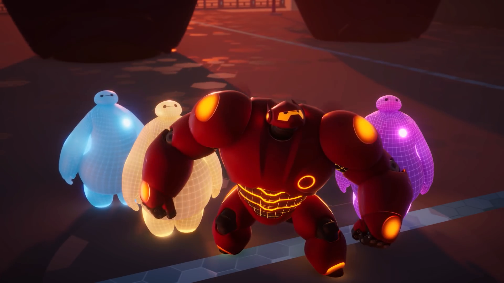

About Baymax
Baymax is an inflatable computerize robot. He always says, "Hello! I am Baymax, your personal healthcare companion."
Baymax and other Baymaxes
Baymax's Characteristics
- He can diagnose health problems and will help you heal
- He's very compassionate and loves animal too.
- He's highly huggable and has a soothing voice.
Baymax's friends
Baymax has awesome friends. His bestfriend is Hiro. He will help Baymax to achieve his full potential. Click on the links below to read more about them: